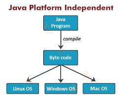
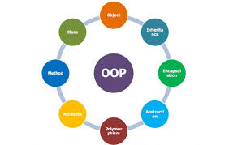
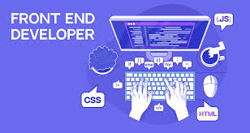
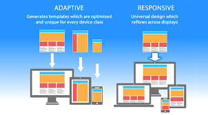
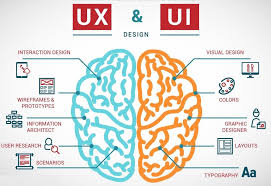
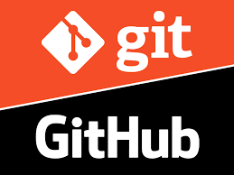

Bài viết gần đây
Blog

Bắt đầu với Java
Java là một trong những ngôn ngữ lập trình mạnh mẽ và phổ biến nhất thế giới. Bài viết này nói về nền tảng cơ bản và hệ sinh thái của Java.
Đọc thêm
Hiểu về Lập trình Hướng đối tượng (OOP)
OOP là nền tảng cốt lõi của Java, giúp tổ chức mã thành các đối tượng thay vì quy trình.
Đọc thêm
Hành trình Frontend tại HUTECH
Hành trình của mình đến với Frontend bắt đầu bằng sự tò mò — làm sao các website hoạt động và chuyển động được như vậy?
Đọc thêmReactJS: Tư duy thành phần và sức mạnh tái sử dụng
ReactJS không chỉ là một thư viện, mà là một triết lý mới về cách xây dựng giao diện người dùng.
Đọc thêmTailwindCSS: Viết CSS theo cách hiện đại
Từ khi biết đến TailwindCSS, mình nhận ra việc viết giao diện không còn rườm rà như trước.
Đọc thêm
Responsive Design: Nghệ thuật làm web “biết thích nghi”
Responsive không chỉ là kỹ thuật – đó là cách website giao tiếp tự nhiên với người dùng ở mọi kích thước màn hình.
Đọc thêm
UI/UX: Khi lập trình viên trở thành người kể chuyện
Mình từng nghĩ UI/UX chỉ dành cho designer, cho đến khi hiểu rằng mỗi dòng code đều đang kể một câu chuyện với người dùng.
Đọc thêm
Git & GitHub: Nơi code trở thành hành trình học hỏi
GitHub dạy mình rằng viết code không chỉ là cá nhân – đó là sự cộng tác, chia sẻ và phát triển cùng nhau.
Đọc thêm
Hiệu năng Frontend: Khi từng mili-giây đều có giá trị
Tối ưu hiệu năng giúp trang web không chỉ chạy nhanh hơn mà còn nâng trải nghiệm người dùng lên tầm khác.
Đọc thêm